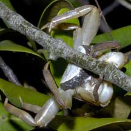

|
|
| crabs text index | photo index |
| Phylum Arthropoda > Subphylum Crustacea > Class Malacostraca > Order Decapoda > Brachyurans |
| Sesarmid
crabs Family Sesarmidae updated Dec 2019
Where seen? Small sesarmid crabs are commonly seen in our mangroves, especially at night. There are as many as 40 species of these crabs in our mangroves. They are often hard to spot as they are well camouflaged, although some may have colourful markings. They are more active at night. Features: Body width 4-6cm. Sesarmid crabs are adapted for scrambling over slippery surfaces. They have well-developed hooks on the tips of their long legs that grip these surfaces. Their bodies and legs are flattened, allowing them to squeeze deep into narrow cracks and crevices. In some species, males have larger pincers than females. Many can stay out of the water for some time. |
 About to munch on flowers? Sungei Buloh Wetland Reserve, Sep 03 |
 This mama crab was carrying lots of eggs! Kranji, Jun 06 |
| Role in the habitat: By feeding
on mangrove leaves, these crabs recycle nutrients in the mangrove
forest. Quickly breaking down the leaves for others in the food chain
to eat, e.g., animals that eat the fragments left over by the crabs,
what comes out of the crab after it eats the leaves, and of course,
the crab itself! Status and threats: Some of our Sesarmid crabs are listed among the threatened animals of Singapore. Like other creatures of the intertidal zone, they are affected by human activities such as reclamation and pollution. Trampling by careless visitors can also affect local populations. |
| Some Sesarmid crabs on Singapore shores |


| Family
Sesarmidae recorded for Singapore from Wee Y.C. and Peter K. L. Ng. 1994. A First Look at Biodiversity in Singapore +from The Biodiversity of Singapore, Lee Kong Chian Natural History Museum. **Ng, Peter K. L. & N. Sivasothi, 1999. A Guide to the Mangroves of Singapore II (Animal Diversity). in red are those listed among the threatened animals of Singapore from Davison, G.W. H. and P. K. L. Ng and Ho Hua Chew, 2008. The Singapore Red Data Book: Threatened plants and animals of Singapore. ^from WORMS
|
Links
|